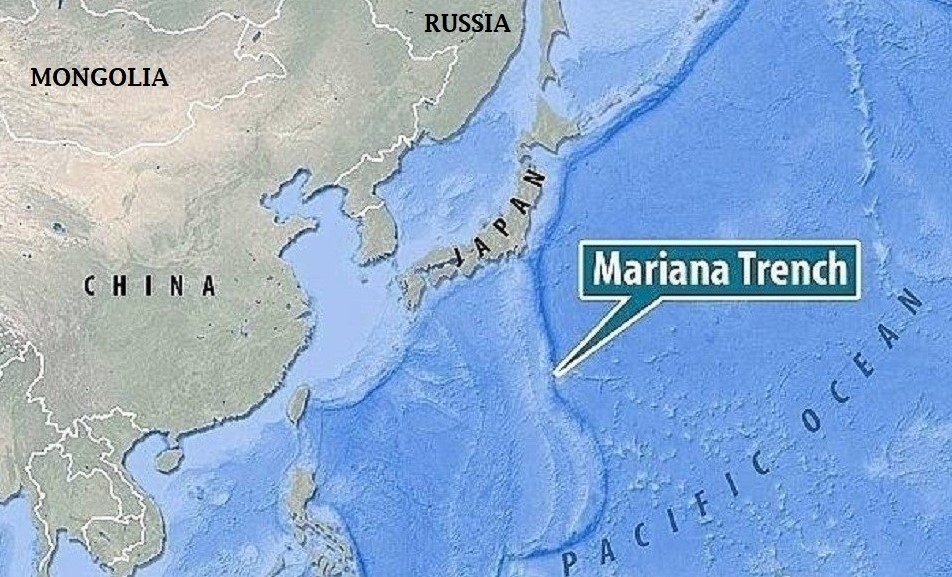
Mariana Trench the world's extremely deepest part in the oceans of the world.Located to the eastern part of Mariana Islands and to the west of Pacific Ocean.The maximum depth of Mariana Trench is 10,994 meters deep which is way more bigger than the world's highest peak ie the Mount Everest whose highest elevation is 8848 meters.
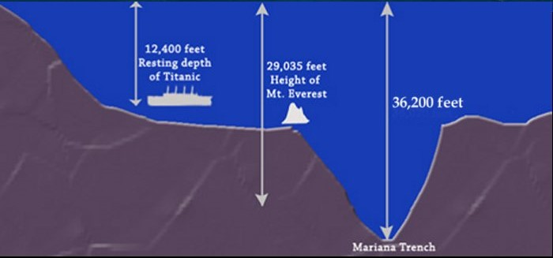
The Mariana Trench is a V-shaped trench.The maximum depth where the scuba divers can swim is 40 meters deep and at the depth of 500m the world's largest mammals swims ie The Blue Whale this is the maximum depth where these whales can swim, further at 1000m this the maximum point here the sunlight reaches.
In the year 1960 Jacques Piccard and Don Walsh were the first person who have reached till the end of the Mariana Trench.Scientists have even found life at this extreme deep point they are very weird,scary looking fishes.Till now the deepest swimming fish found at the depth ofn 8143m is the snailfish which is the deepest swimming fish of the world.During some scientific researches in the Mariana Trench they have found some extra ordinary large thing some says that it's the extinct prehistoric creature Megalodon.
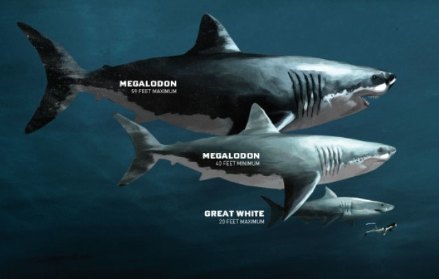
Megalodon was a massive monster shark it's one of the greatest predators that has ever lived on Earth it's approx size was 18 feet which is very long where as the size of it's teeth is 20 cm.But it's still existing or not no one knows it's a true mystrey.There are a lots of unknown fishes in the Mariana Trench which is not known to humans.
Let's see the famous rare fishes of the Mariana Trench.
GOBLIN SHARK
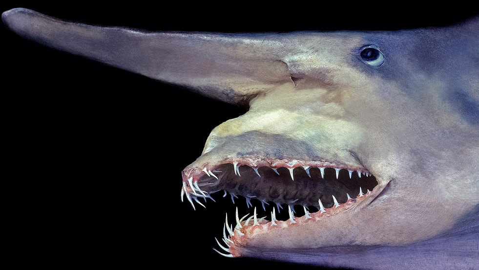
Goblin sharks are one of the most rarely found fishes deep under the sea.It is also known as the "Living Fossil" because scientists had thought that this shark specie is totally extinct but after a long-time later this fish was found again this is the reason it is calles as the Living Fossil.The maximum height of this shark is 12.5 feets and weighs upto 210kgs.Compared to other shark species this shark is totally different from others it is light pinkish in colour,having small fins and it is soft and fleshy the main thing which makes it totally different from others is that while hunting it can stretch out it's jaws.Goblin shark has a long,flat,strecthed nose which makes it look weird and bit scary.Goblin shark is not a big shark it mostly feeds on small fishes such as
 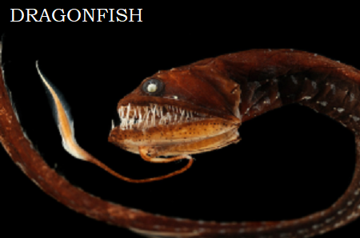
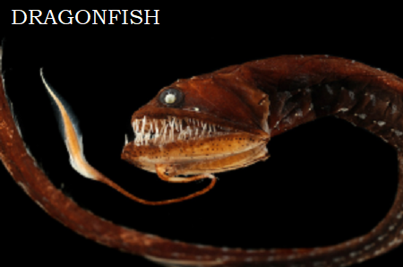
rattails,squids,crabs and dragonfishes.They have sharp thin teeths in a unalign order.As these sharks swim at a depth of 4000m so sunlight doesn't reaches over there because of which they are unable to see in dark so to hunt in dark they have super senses which sends them signal that the prey is near them because of which they are able to hunt in extreme dark too.
FANGTOOTH FISH
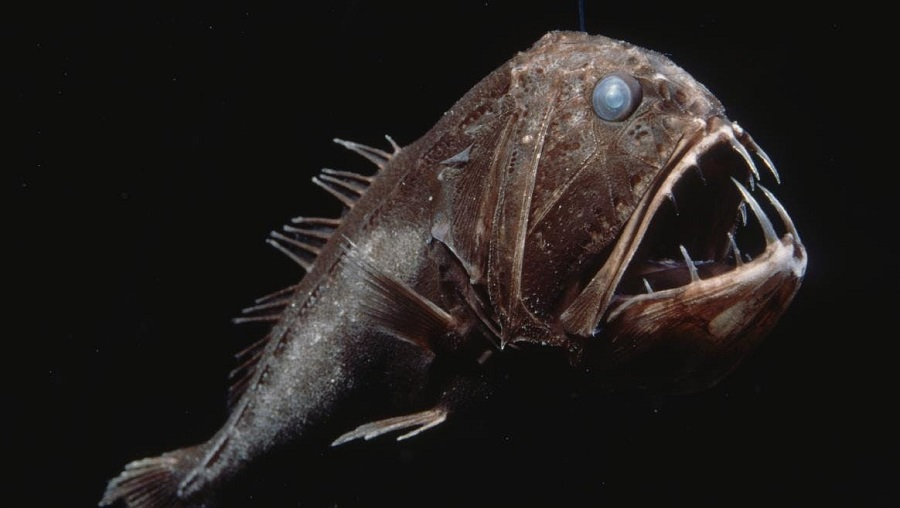Fangtooth is another weird looking fish species these fishes swim at a depth of 16,000ft deep under the sea.The main reason it is called the fangtooth fish is because the teeth of it's looks like the teeth of snakes and compared to other deep swimming fish fangtooths have the highest teeth.The maximum length of this fish is 16 cm and weighs upto 36 kgs.During day times fangtooths go more deep whereas in evening they come up to the upper part of water to hunt for preys.
FRILLED SHARK
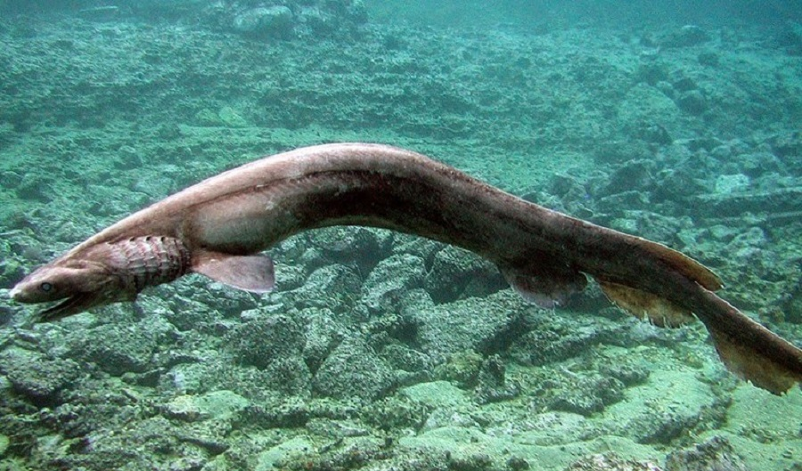The frilled shark the most rarest sharks encountered by human.Frilled shark are familiar lokking to eels mosts of the people think that this shark dosen't exist people used to think it as myth but later in 1879 a German scientist accidentally discovered this shark in oceans of Japan.This shark was caught between 5150ft deep this shark is also known as the living fossil.The maximum length of this shark reaches upto 6.6ft and they don't have fins like other sharks so they swim like snakes in the oceans.Frilled sharks have shiny green colour eyes whereas their body is in light brown colour.These sharks have flexible jaws they can swallow small squids,eat other sharks and small bomy fishes to.sLike other deep living species this fish is also harmless to humans.
VAMPIRE SQUID
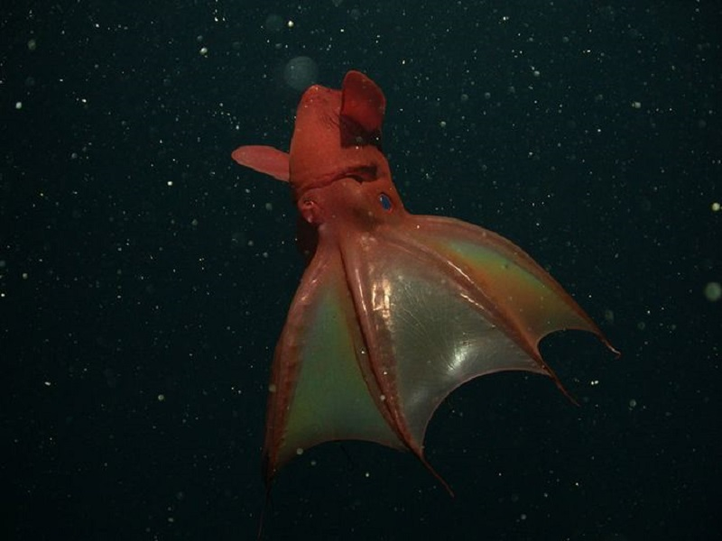Vampire squid also known as the (vampire from hell) the main reason of this is because of it's bright red and smooth black colour.Vampire squids reaches upto a length of 30 cm even though these squids are smaller in size but they are ferocious squids.These squids even have fins(only males).Vampire squids doesn't feeds on blood but it feeds on detritus(waste materials) that's very weird but yes it feeds on waste materials.These squids have large teeths
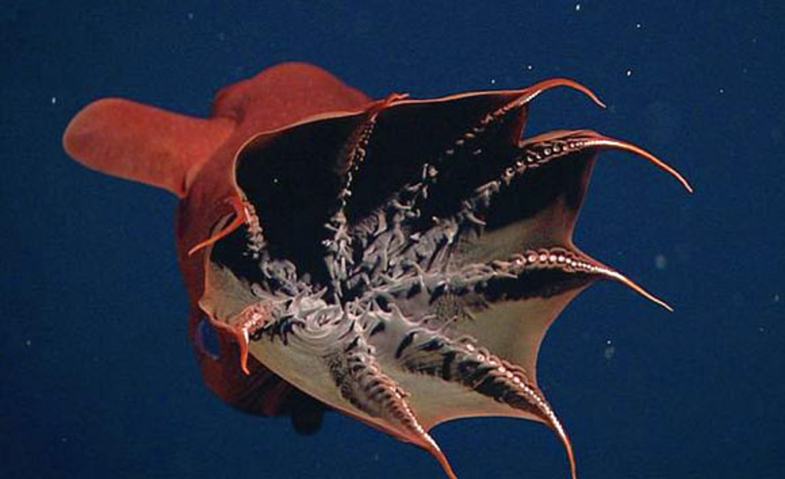
in their inner mouth which makes them look even more scarier.Vampire squids are totally different types of squids even though they are strong but in some cases of self-defence they don't spit ink whereas they spit mucus to threaten their predator.Vampire squids have special ability that they can even glow in dark which makes look really scary.
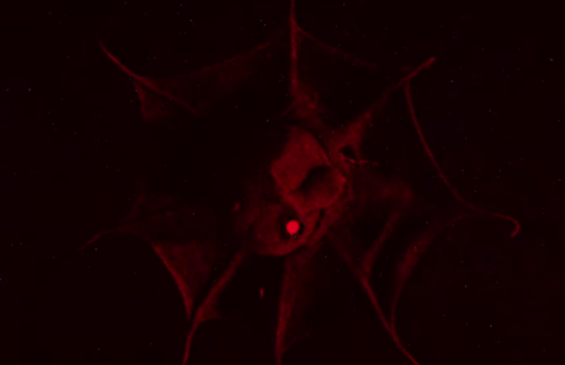